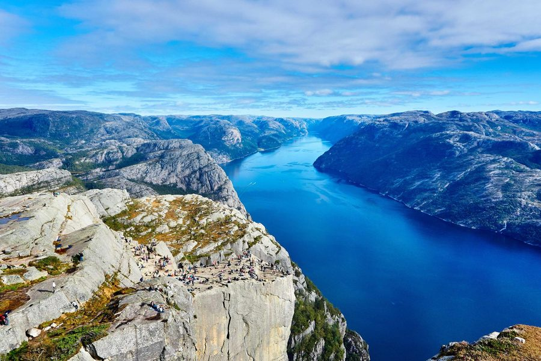
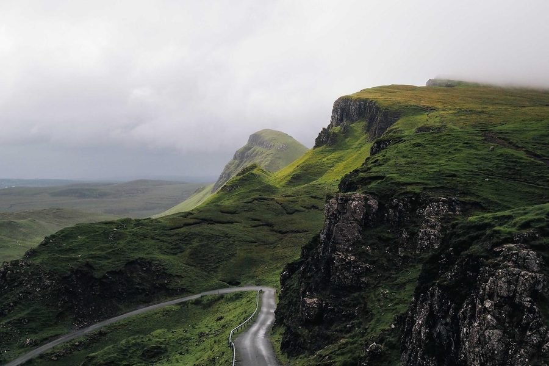
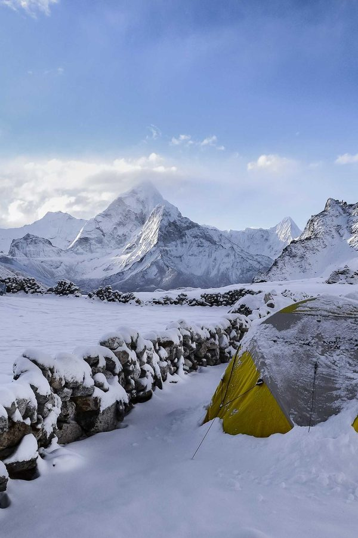
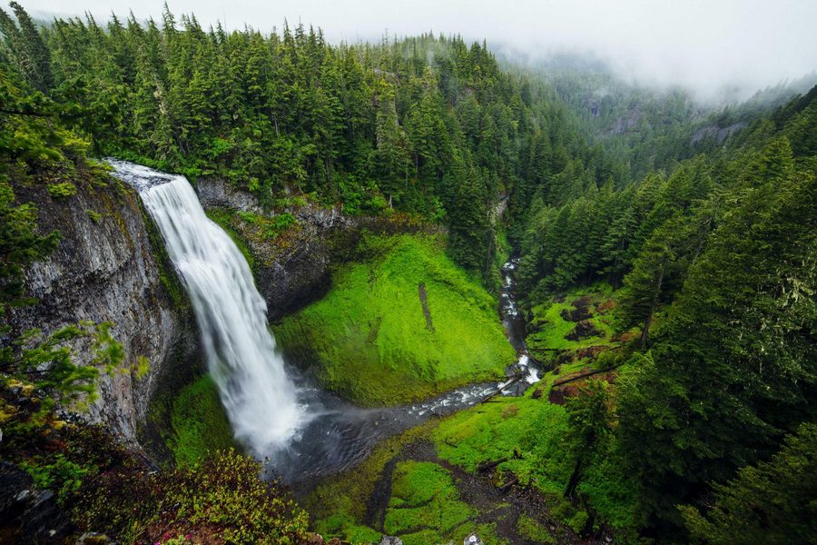
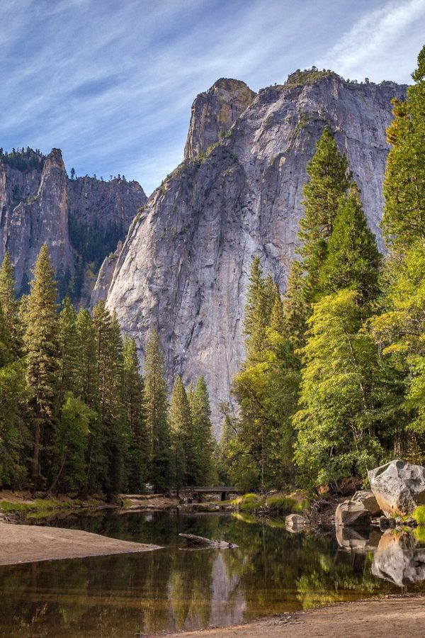

Between Mountains and Sea
A slow journey along the east coast, capturing the meeting of mountains, sea and sky.






A slow journey along the east coast, capturing the meeting of mountains, sea and sky.




